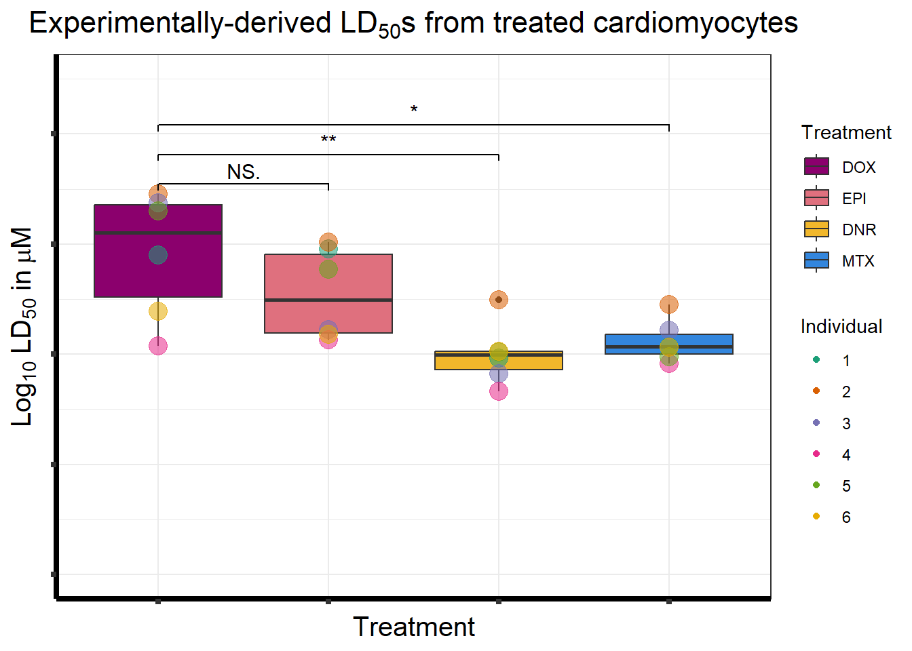

Figure1
ERM
2023-06-21
Last updated: 2023-06-21
Checks: 7 0
Knit directory: Cardiotoxicity/
This reproducible R Markdown analysis was created with workflowr (version 1.7.0). The Checks tab describes the reproducibility checks that were applied when the results were created. The Past versions tab lists the development history.
Great! Since the R Markdown file has been committed to the Git repository, you know the exact version of the code that produced these results.
Great job! The global environment was empty. Objects defined in the global environment can affect the analysis in your R Markdown file in unknown ways. For reproduciblity it’s best to always run the code in an empty environment.
The command set.seed(20230109) was run prior to running
the code in the R Markdown file. Setting a seed ensures that any results
that rely on randomness, e.g. subsampling or permutations, are
reproducible.
Great job! Recording the operating system, R version, and package versions is critical for reproducibility.
Nice! There were no cached chunks for this analysis, so you can be confident that you successfully produced the results during this run.
Great job! Using relative paths to the files within your workflowr project makes it easier to run your code on other machines.
Great! You are using Git for version control. Tracking code development and connecting the code version to the results is critical for reproducibility.
The results in this page were generated with repository version 5d643ee. See the Past versions tab to see a history of the changes made to the R Markdown and HTML files.
Note that you need to be careful to ensure that all relevant files for
the analysis have been committed to Git prior to generating the results
(you can use wflow_publish or
wflow_git_commit). workflowr only checks the R Markdown
file, but you know if there are other scripts or data files that it
depends on. Below is the status of the Git repository when the results
were generated:
Ignored files:
Ignored: .RData
Ignored: .Rhistory
Ignored: .Rproj.user/
Ignored: data/41588_2018_171_MOESM3_ESMeQTL_ST2_for paper.csv
Ignored: data/Arr_GWAS.txt
Ignored: data/Arr_geneset.RDS
Ignored: data/BC_cell_lines.csv
Ignored: data/CADGWASgene_table.csv
Ignored: data/CAD_geneset.RDS
Ignored: data/Clamp_Summary.csv
Ignored: data/Cormotif_24_k1-5_raw.RDS
Ignored: data/DAgostres24.RDS
Ignored: data/DAtable1.csv
Ignored: data/DDEMresp_list.csv
Ignored: data/DDE_reQTL.txt
Ignored: data/DDEresp_list.csv
Ignored: data/DEG-GO/
Ignored: data/DEG_cormotif.RDS
Ignored: data/DF_Plate_Peak.csv
Ignored: data/DRC48hoursdata.csv
Ignored: data/Da24counts.txt
Ignored: data/Dx24counts.txt
Ignored: data/Dx_reQTL_specific.txt
Ignored: data/Ep24counts.txt
Ignored: data/GOIsig.csv
Ignored: data/GOplots.R
Ignored: data/GTEX_setsimple.csv
Ignored: data/GTEx_gene_list.csv
Ignored: data/HFGWASgene_table.csv
Ignored: data/HF_geneset.RDS
Ignored: data/Heart_Left_Ventricle.v8.egenes.txt
Ignored: data/Hf_GWAS.txt
Ignored: data/K_cluster
Ignored: data/K_cluster_kisthree.csv
Ignored: data/K_cluster_kistwo.csv
Ignored: data/LDH48hoursdata.csv
Ignored: data/Mt24counts.txt
Ignored: data/RINsamplelist.txt
Ignored: data/Seonane2019supp1.txt
Ignored: data/TOP2Bi-24hoursGO_analysis.csv
Ignored: data/TR24counts.txt
Ignored: data/Top2biresp_cluster24h.csv
Ignored: data/Viabilitylistfull.csv
Ignored: data/allexpressedgenes.txt
Ignored: data/allgenes.txt
Ignored: data/allmatrix.RDS
Ignored: data/avgLD50.RDS
Ignored: data/backGL.txt
Ignored: data/cormotif_3hk1-8.RDS
Ignored: data/cormotif_initalK5.RDS
Ignored: data/cormotif_initialK5.RDS
Ignored: data/cormotif_initialall.RDS
Ignored: data/counts24hours.RDS
Ignored: data/cpmcount.RDS
Ignored: data/cpmnorm_counts.csv
Ignored: data/crispr_genes.csv
Ignored: data/cvd_GWAS.txt
Ignored: data/dat_cpm.RDS
Ignored: data/data_outline.txt
Ignored: data/efit2.RDS
Ignored: data/efit2results.RDS
Ignored: data/ensembl_backup.RDS
Ignored: data/ensgtotal.txt
Ignored: data/filenameonly.txt
Ignored: data/filtered_cpm_counts.csv
Ignored: data/filtered_raw_counts.csv
Ignored: data/filtermatrix_x.RDS
Ignored: data/folder_05top/
Ignored: data/geneDoxonlyQTL.csv
Ignored: data/gene_corr_frame.RDS
Ignored: data/gene_prob_tran3h.RDS
Ignored: data/gene_probabilityk5.RDS
Ignored: data/gostresTop2bi_ER.RDS
Ignored: data/gostresTop2bi_LR
Ignored: data/gostresTop2bi_LR.RDS
Ignored: data/gostresTop2bi_TI.RDS
Ignored: data/gostrescoNR
Ignored: data/gtex/
Ignored: data/heartgenes.csv
Ignored: data/individualDRCfile.RDS
Ignored: data/individual_DRC48.RDS
Ignored: data/individual_LDH48.RDS
Ignored: data/knowfig4.csv
Ignored: data/knowfig5.csv
Ignored: data/mymatrix.RDS
Ignored: data/nonresponse_cluster24h.csv
Ignored: data/norm_LDH.csv
Ignored: data/norm_counts.csv
Ignored: data/old_sets/
Ignored: data/plan2plot.png
Ignored: data/raw_counts.csv
Ignored: data/response_cluster24h.csv
Ignored: data/sigVDA24.txt
Ignored: data/sigVDA3.txt
Ignored: data/sigVDX24.txt
Ignored: data/sigVDX3.txt
Ignored: data/sigVEP24.txt
Ignored: data/sigVEP3.txt
Ignored: data/sigVMT24.txt
Ignored: data/sigVMT3.txt
Ignored: data/sigVTR24.txt
Ignored: data/sigVTR3.txt
Ignored: data/siglist.RDS
Ignored: data/slope_table.csv
Ignored: data/table3a.omar
Ignored: data/toplistall.RDS
Ignored: data/tvl24hour.txt
Ignored: data/tvl24hourw.txt
Ignored: data/venn_code.R
Untracked files:
Untracked: .RDataTmp
Untracked: .RDataTmp1
Untracked: .RDataTmp2
Untracked: OmicNavigator_learn.R
Untracked: code/DRC_plotfigure1.png
Untracked: code/cpm_boxplot.R
Untracked: code/fig1plot.png
Untracked: code/figurelegeddrc.png
Untracked: cormotif_probability_genelist.csv
Untracked: individual-legenddark2.png
Untracked: installed_old.rda
Untracked: motif_ER.txt
Untracked: motif_LR.txt
Untracked: motif_NR.txt
Untracked: motif_TI.txt
Untracked: output/Doxonly_deg.csv
Untracked: output/daplot.RDS
Untracked: output/dxplot.RDS
Untracked: output/epplot.RDS
Untracked: output/mtplot.RDS
Untracked: output/output-old/
Untracked: output/trplot.RDS
Untracked: output/veplot.RDS
Untracked: reneebasecode.R
Unstaged changes:
Modified: analysis/GTEx_genes.Rmd
Note that any generated files, e.g. HTML, png, CSS, etc., are not included in this status report because it is ok for generated content to have uncommitted changes.
These are the previous versions of the repository in which changes were
made to the R Markdown (analysis/Figure1.Rmd) and HTML
(docs/Figure1.html) files. If you’ve configured a remote
Git repository (see ?wflow_git_remote), click on the
hyperlinks in the table below to view the files as they were in that
past version.
| File | Version | Author | Date | Message |
|---|---|---|---|---|
| Rmd | 5d643ee | reneeisnowhere | 2023-06-21 | update figure with error bars |
| html | 6328422 | reneeisnowhere | 2023-06-16 | Build site. |
| Rmd | 0aceb9a | reneeisnowhere | 2023-06-16 | adding code and graphs |
| html | bd0e45f | reneeisnowhere | 2023-06-15 | Build site. |
| Rmd | f8f511a | reneeisnowhere | 2023-06-15 | updates and simplifications of code |
| html | f8f511a | reneeisnowhere | 2023-06-15 | updates and simplifications of code |
| html | 908b616 | reneeisnowhere | 2023-06-13 | Build site. |
| Rmd | 44ae8bb | reneeisnowhere | 2023-06-13 | picture check |
| html | f2d0e90 | reneeisnowhere | 2023-06-13 | Build site. |
| Rmd | 71b3ce2 | reneeisnowhere | 2023-06-13 | picture check |
| html | d175bfb | reneeisnowhere | 2023-06-13 | Build site. |
| Rmd | 0c83ba8 | reneeisnowhere | 2023-06-13 | picture check |
| html | 044fc66 | reneeisnowhere | 2023-06-12 | Build site. |
| Rmd | 1ebf470 | reneeisnowhere | 2023-06-12 | adding figure 1 |
library(car)
library(tidyverse)
library(tinytex)
library(BiocGenerics)
library(data.table)
library(drc)
library(cowplot)
library(ggsignif)
library(RColorBrewer)
library(broom)Figure 1
Top2i drugs affect cardiomyocyte viability in a dose dependent manner.
A. Project Overview


things to note about this image so far: Need to import into illustrator. Goal is to have colors changes on Drugs from sick purple and jaundice yellow, to a red tone and a blue tone for non-ACs. I also want to change to add a time line of treatment.
B. Example Dose response curves from 48 hour drug exposure.
daplot <- readRDS("output/daplot.RDS")
dxplot <- readRDS("output/dxplot.RDS")
epplot<- readRDS("output/epplot.RDS")
mtplot<- readRDS("output/mtplot.RDS")
trplot<- readRDS("output/trplot.RDS")
veplot<- readRDS("output/veplot.RDS")
plan2 <- cowplot::plot_grid(daplot,dxplot,epplot,mtplot, trplot,veplot,ncol =3)
print(plan2) Lines are a log-logistic regression of the mean from quadruplicates at 8
separate concentrations for each condition, except (trastuzmab)TRZ,
which is 7 concentrations.
Lines are a log-logistic regression of the mean from quadruplicates at 8
separate concentrations for each condition, except (trastuzmab)TRZ,
which is 7 concentrations.
C. 48 hour 50% lethal dose plot
drug_palc <- c("#8B006D","#DF707E","#F1B72B", "#3386DD","#707031","#41B333")
BC_cell_lines <- read.csv("data/BC_cell_lines.csv",row.names = 1)
avgLD50 <- readRDS("data/avgLD50.RDS")
graphLD50 <-
avgLD50 %>%
mutate(Treatment = case_match (Treatment, "Daun"~"Daunorubicin",
"Doxo"~"Doxorubicin",
"Epi"~"Epirubicin",
"Mito"~"Mitoxantrone",
"Tras"~"Trastuzumab",
"Veh"~ "Vehicle",
.default= Treatment)) %>%
mutate(indv= factor(indv)) %>%
ggplot(., (aes(x = (Treatment), y = log10(LD50)))) +
geom_boxplot(position = "identity", aes(fill=Treatment))+
geom_point(aes(color = indv,
size = 5,alpha = 0.5)) +
ggtitle(expression("Experimentally-derived LD"[50]*"s from treated cardiomyocytes"))+
xlab("Treatment")+
geom_signif(comparisons =list(c ("Doxorubicin","Daunorubicin"),
c("Doxorubicin","Epirubicin"),
c("Doxorubicin","Mitoxantrone")),
test="t.test",
map_signif_level=TRUE,
textsize =4,
step_increase = 0.15)+
ylab(bquote('Log'[10]~ 'LD'[50]~'in '*mu*M))+
scale_color_brewer(palette = "Dark2",
name = "Individual",
labels = c("1","2","3","4","5","6"))+
ylim(-2,2)+
scale_fill_manual(values=drug_palc)+
theme_bw() +
theme(plot.title = element_text(hjust =0.5, size = 18))+
guides(alpha ="none", size = "none")+
#theme(strip.background = element_rect(fill = "transparent")) +
theme(plot.title = element_text(size = rel(1.5), hjust = 0.5),
# legend.position = "none",
axis.title = element_text(size = 15, color = "black"),
axis.ticks = element_line(linewidth = 1.5),
axis.line = element_line(linewidth = 1.5),
axis.text = element_text(size = 12, color = "black", angle = 0),
strip.text.x = element_text(size = 15, color = "black", face = "bold"))
graphLD50 ## D. Breast Cancer cell line 50% lethal dose plot
graphBC <- BC_cell_lines %>%
mutate(Cell_line= factor(Cell_line)) %>%
pivot_longer(.,col=!Cell_line,names_to = 'Treatment',values_to = 'LD50') %>%
ggplot(., (aes(x = (Treatment), y = log10(LD50)))) +
geom_boxplot(position = "identity",aes(fill=Treatment))+
geom_point(aes(color = Cell_line,
size = 5,alpha = 0.5)) +
ggtitle(expression("Breast cancer cell line reported LD"[50]*"s"))+
xlab("")+
geom_signif(comparisons =list(c ("Doxorubicin","Daunorubicin"),
c("Doxorubicin","Epirubicin"),
c("Doxorubicin","Mitoxantrone")),
test="t.test",
map_signif_level=TRUE,
textsize =4,
step_increase = 0.15)+
ylab(bquote('Log'[10]~ 'LD'[50]~'in '*mu*M))+
scale_color_brewer(palette = "Spectral",
name = "Cell lines")+
scale_fill_manual(values=drug_palc)+
ylim(-2,2)+
theme_bw() +
theme(plot.title = element_text(hjust =0.5, size = 18))+
guides(alpha ="none", size = "none", fill= "none")+
#theme(strip.background = element_rect(fill = "transparent")) +
theme(plot.title = element_text(size = rel(1.5), hjust = 0.5),
# legend.position = "none",
axis.title = element_text(size = 15, color = "black"),
axis.ticks = element_line(linewidth = 1.5),
axis.line = element_line(linewidth = 1.5),
axis.text = element_text(size = 12, color = "black", angle = 0),
strip.text.x = element_text(size = 15, color = "black", face = "bold"))
graphBC
sessionInfo()R version 4.2.2 (2022-10-31 ucrt)
Platform: x86_64-w64-mingw32/x64 (64-bit)
Running under: Windows 10 x64 (build 19045)
Matrix products: default
locale:
[1] LC_COLLATE=English_United States.utf8
[2] LC_CTYPE=English_United States.utf8
[3] LC_MONETARY=English_United States.utf8
[4] LC_NUMERIC=C
[5] LC_TIME=English_United States.utf8
attached base packages:
[1] stats graphics grDevices utils datasets methods base
other attached packages:
[1] broom_1.0.5 RColorBrewer_1.1-3 ggsignif_0.6.4
[4] cowplot_1.1.1 drc_3.0-1 MASS_7.3-60
[7] data.table_1.14.8 BiocGenerics_0.42.0 tinytex_0.45
[10] lubridate_1.9.2 forcats_1.0.0 stringr_1.5.0
[13] dplyr_1.1.2 purrr_1.0.1 readr_2.1.4
[16] tidyr_1.3.0 tibble_3.2.1 ggplot2_3.4.2
[19] tidyverse_2.0.0 car_3.1-2 carData_3.0-5
[22] workflowr_1.7.0
loaded via a namespace (and not attached):
[1] httr_1.4.6 sass_0.4.6 jsonlite_1.8.5 splines_4.2.2
[5] gtools_3.9.4 bslib_0.5.0 getPass_0.2-2 highr_0.10
[9] yaml_2.3.7 pillar_1.9.0 backports_1.4.1 lattice_0.21-8
[13] glue_1.6.2 digest_0.6.31 promises_1.2.0.1 colorspace_2.1-0
[17] sandwich_3.0-2 htmltools_0.5.5 httpuv_1.6.11 Matrix_1.5-4.1
[21] pkgconfig_2.0.3 mvtnorm_1.2-2 scales_1.2.1 processx_3.8.1
[25] whisker_0.4.1 later_1.3.1 tzdb_0.4.0 timechange_0.2.0
[29] git2r_0.32.0 mgcv_1.8-42 farver_2.1.1 generics_0.1.3
[33] TH.data_1.1-2 cachem_1.0.8 withr_2.5.0 cli_3.6.1
[37] survival_3.5-5 magrittr_2.0.3 evaluate_0.21 ps_1.7.5
[41] fs_1.6.2 fansi_1.0.4 nlme_3.1-162 tools_4.2.2
[45] hms_1.1.3 lifecycle_1.0.3 multcomp_1.4-24 munsell_0.5.0
[49] plotrix_3.8-2 callr_3.7.3 compiler_4.2.2 jquerylib_0.1.4
[53] rlang_1.1.1 grid_4.2.2 rstudioapi_0.14 labeling_0.4.2
[57] rmarkdown_2.22 gtable_0.3.3 codetools_0.2-19 abind_1.4-5
[61] R6_2.5.1 zoo_1.8-12 knitr_1.43 fastmap_1.1.1
[65] utf8_1.2.3 rprojroot_2.0.3 stringi_1.7.12 Rcpp_1.0.10
[69] vctrs_0.6.3 tidyselect_1.2.0 xfun_0.39